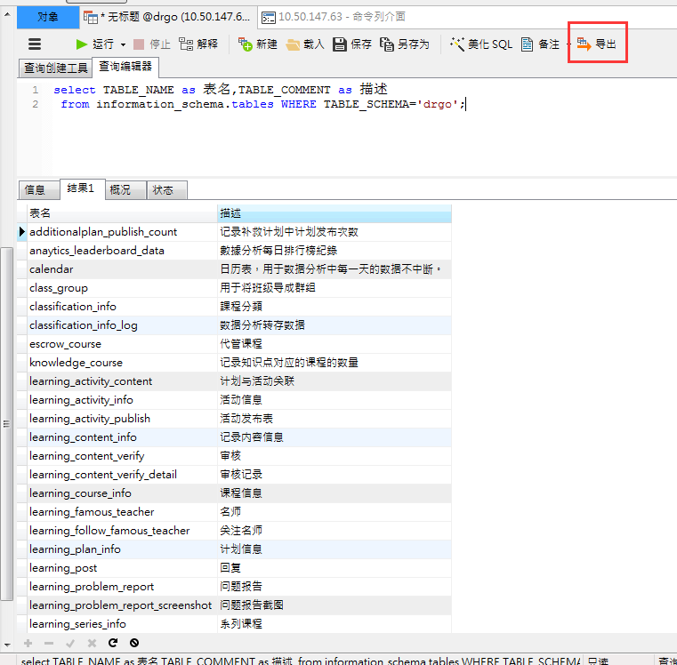
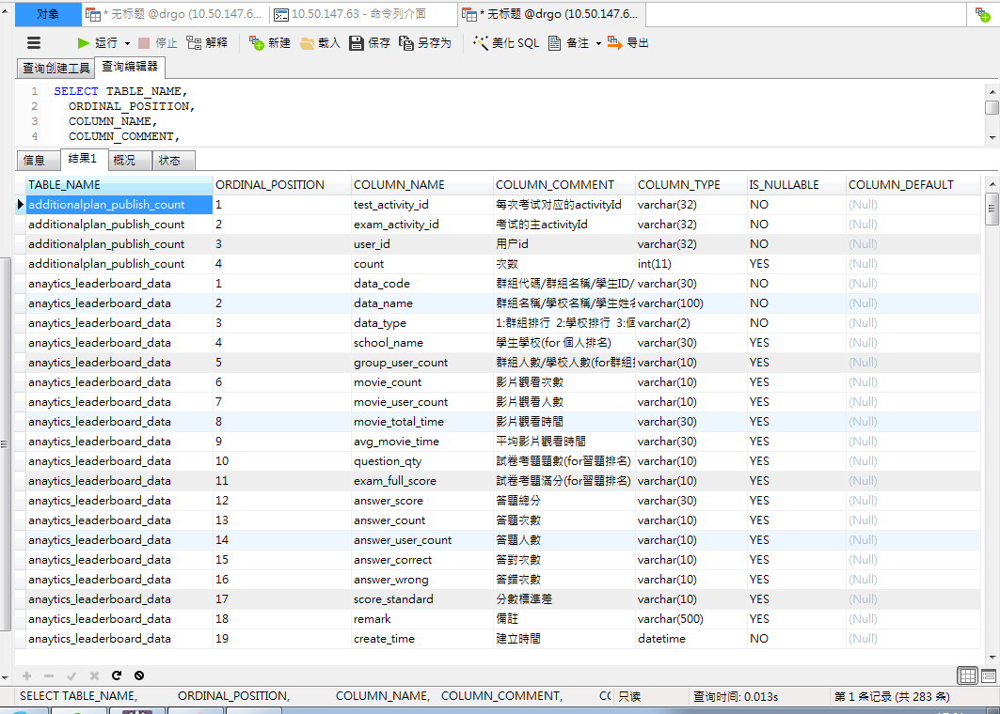
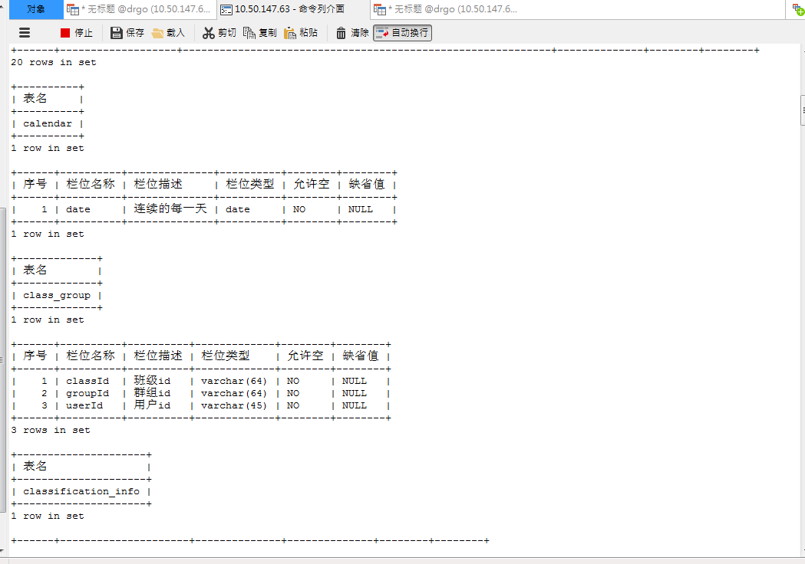
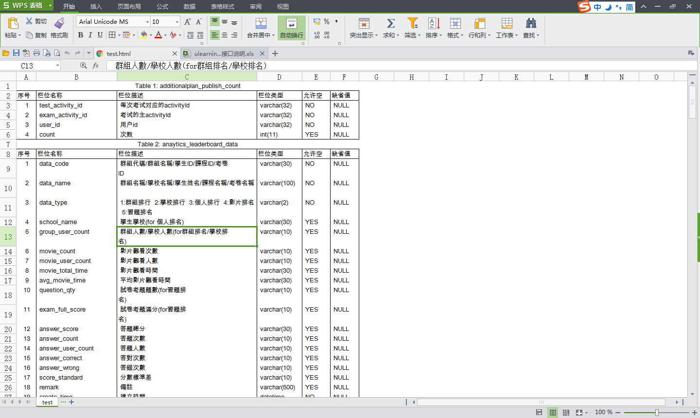

虽然navicat、sql yog等工具都支持将表结构打印出来，但是没办法自定义、而且不能直接在word、excel中使用。但是通过使用sql、存储过程、emacs可以满足这个需求，而且非常灵活。
1 打印所有的表名和描述
直接用sql组织想要的格式，
select TABLE_NAME as 表名,TABLE_COMMENT as 描述 from information_schema.tables WHERE TABLE_SCHEMA='drgo';
效果如图,直接在navicat上导出成想要的文档格式即可

2 打印所有表的字段以及字段的基本属性
这种要复杂一些，最先想到的还是用sql来组织格式。
SELECT TABLE_NAME, ORDINAL_POSITION, COLUMN_NAME, COLUMN_COMMENT, COLUMN_TYPE, IS_NULLABLE, COLUMN_DEFAULT FROM `information_schema`.`columns` WHERE TABLE_SCHEMA = 'drgo' AND TABLE_NAME IN ( SELECT TABLE_NAME FROM information_schema. TABLES WHERE TABLE_SCHEMA = 'drgo' );

这样导出到文档中显示效果不好，表与表中没有间隔，而且表名这一列很冗余。于是写了一个存储过程
BEGIN DECLARE t_name VARCHAR (60); DECLARE done INT DEFAULT 0; #声明游标cursor_name DECLARE cursor_name CURSOR FOR SELECT TABLE_NAME FROM information_schema.tables WHERE TABLE_SCHEMA = 'drgo' AND TABLE_NAME NOT LIKE 't_%'; #设置一个终止标记 DECLARE CONTINUE HANDLER FOR SQLSTATE '02000' SET done = 1; #打开游标 OPEN cursor_name; #获取游标当前指针的记录，读取一行数据并传给变量a,b FETCH cursor_name INTO t_name; #开始循环，判断是否游标已经到达了最后作为循环条件 REPEAT SELECT t_name AS 表名; -- SELECT ORDINAL_POSITION,COLUMN_NAME,COLUMN_COMMENT,COLUMN_TYPE,IS_NULLABLE,COLUMN_DEFAULT SELECT -- TABLE_NAME as 表名, ORDINAL_POSITION AS 序号, COLUMN_NAME AS 栏位名称, COLUMN_COMMENT AS 栏位描述, COLUMN_TYPE AS 栏位类型, IS_NULLABLE AS 允许空, COLUMN_DEFAULT AS 缺省值 FROM `information_schema`.`columns` WHERE TABLE_NAME = t_name AND TABLE_SCHEMA = 'drgo'; FETCH cursor_name INTO t_name; UNTIL done = 1 END REPEAT; #关闭游标 CLOSE cursor_name; #语句执行结束 END $$

效果不错，结构清晰，层次分明。但是怎么把文本格式用到excel和world上呢？接下来该emacs出场了。主要用到了emacs的org mode和multiple-cursors。直接看效果
 编辑之后得到的org文件是这样的。
编辑之后得到的org文件是这样的。
# #+OPTIONS: ^:nil _ 用来禁用_转义，#+CAPTION: 用来设置表头 #+OPTIONS: ^:nil _ #+CAPTION: additionalplan_publish_count | 序号 | 栏位名称 | 栏位描述 | 栏位类型 | 允许空 | 缺省值 | +------+------------------+--------------------------+-------------+--------+--------+ | 1 | test_activity_id | 每次考试对应的activityId | varchar(32) | NO | NULL | | 2 | exam_activity_id | 考试的主activityId | varchar(32) | NO | NULL | | 3 | user_id | 用户id | varchar(32) | NO | NULL | | 4 | count | 次数 | int(11) | YES | NULL | +------+------------------+--------------------------+-------------+--------+--------+ #+CAPTION: anaytics_leaderboard_data | 序号 | 栏位名称 | 栏位描述 | 栏位类型 | 允许空 | 缺省值 | +------+-------------------+------------------------------------------------------------+--------------+--------+--------+ | 1 | data_code | 群組代碼/群組名稱/學生ID/課程ID/考卷ID | varchar(30) | NO | NULL | | 2 | data_name | 群組名稱/學校名稱/學生姓名/課程名稱/考卷名稱 | varchar(100) | NO | NULL | | 3 | data_type | 1:群組排行 2:學校排行 3:個人排行 4:影片排名 5:習題排名 | varchar(2) | NO | NULL | | 4 | school_name | 學生學校(for 個人排名) | varchar(30) | YES | NULL | | 5 | group_user_count | 群組人數/學校人數(for群組排名/學校排名) | varchar(10) | YES | NULL | | 6 | movie_count | 影片觀看次數 | varchar(10) | YES | NULL | | 7 | movie_user_count | 影片觀看人數 | varchar(10) | YES | NULL | | 8 | movie_total_time | 影片觀看時間 | varchar(30) | YES | NULL | | 9 | avg_movie_time | 平均影片觀看時間 | varchar(30) | YES | NULL | | 10 | question_qty | 試卷考題題數(for習題排名) | varchar(10) | YES | NULL | | 11 | exam_full_score | 試卷考題滿分(for習題排名) | varchar(10) | YES | NULL | | 12 | answer_score | 答題總分 | varchar(30) | YES | NULL | | 13 | answer_count | 答題次數 | varchar(10) | YES | NULL | | 14 | answer_user_count | 答題人數 | varchar(10) | YES | NULL | | 15 | answer_correct | 答對次數 | varchar(10) | YES | NULL | | 16 | answer_wrong | 答錯次數 | varchar(10) | YES | NULL | | 17 | score_standard | 分數標準差 | varchar(10) | YES | NULL | | 18 | remark | 備註 | varchar(500) | YES | NULL | | 19 | create_time | 建立時間 | datetime | NO | NULL | | 20 | update_time | 修改時間 | datetime | YES | NULL | +------+-------------------+------------------------------------------------------------+--------------+--------+--------+
MySQL在控制台中的执行结果正好就是emacs中org mode的表格，然后再用multiple-cursors多光标编辑裁剪一下，最后导出成html文件。WPS可以直接打开html文件，最终效果非常好。
